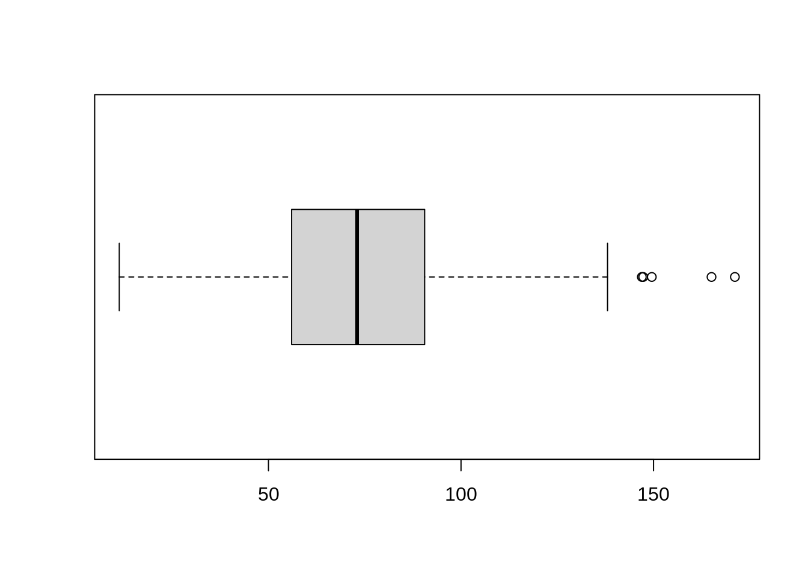
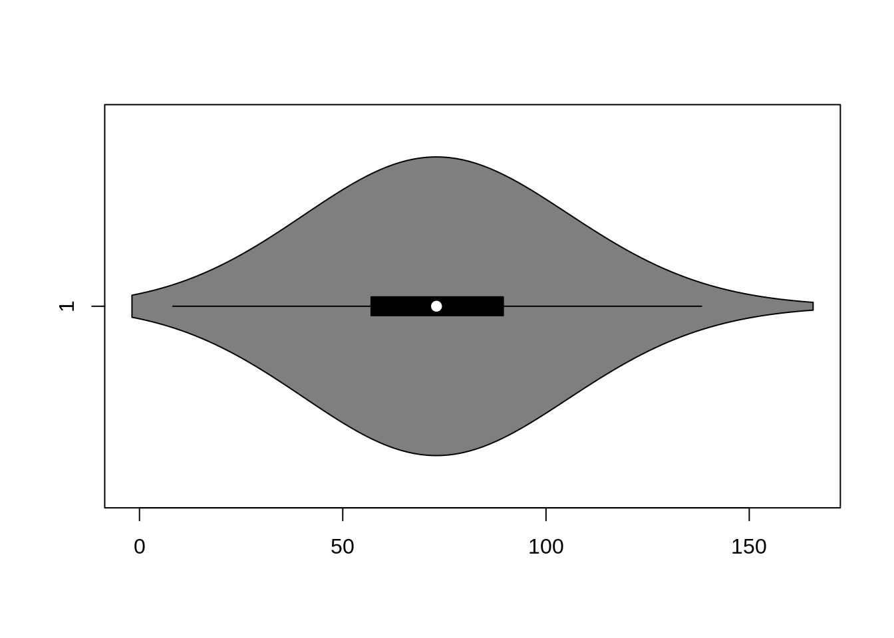
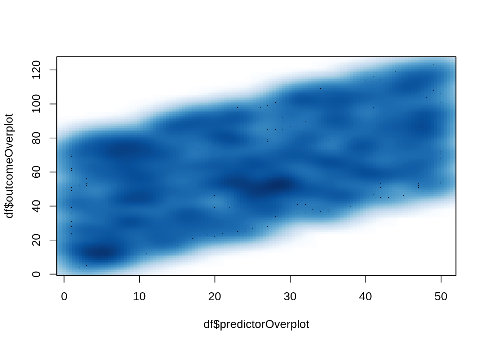
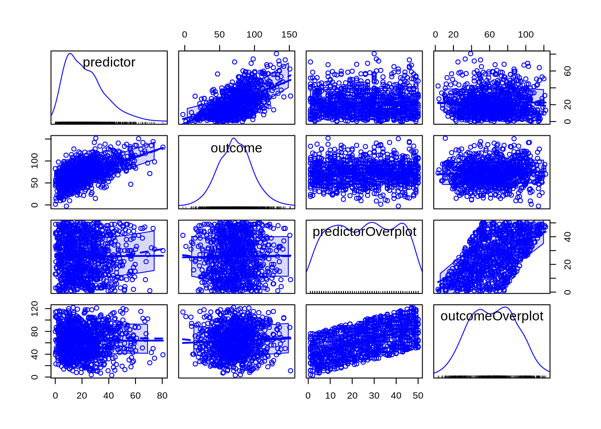
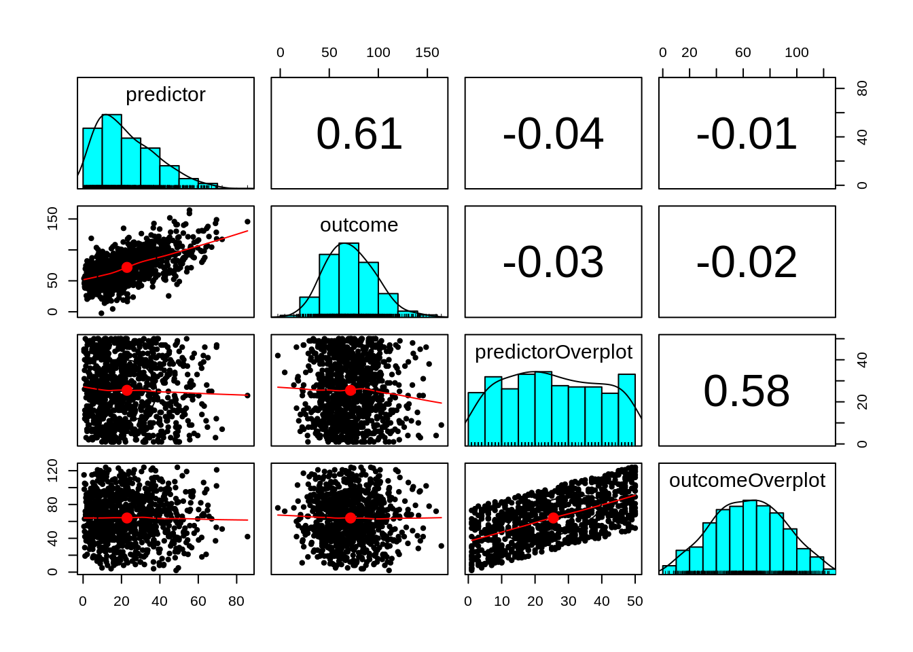
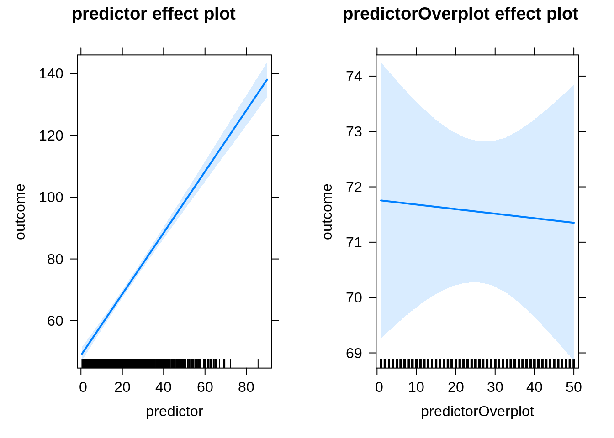
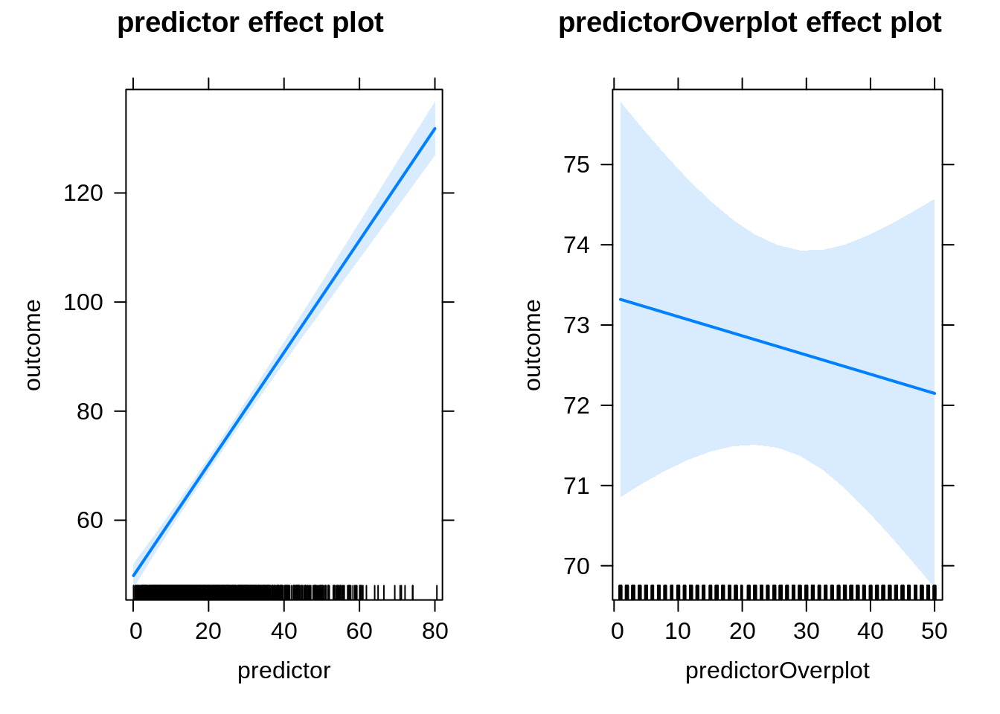

Exploratory Data Analysis
1 Rationale
Exploratory data analysis is important for understanding your data, checking for data issues/errors, and checking assumptions for different statistical models.
LOOK AT YOUR DATA—this is one of the most overlooked steps in data analysis!
2 Preamble
2.1 Install Libraries
#install.packages("remotes")
#remotes::install_git("https://research-git.uiowa.edu/PetersenLab/petersenlab.git")2.2 Load Libraries
library("petersenlab")
library("car")
library("vioplot")
library("ellipse")
library("nlme")
library("effects")
library("corrplot")
library("ggplot2")
library("psych")
library("tidyverse")
library("purrr")3 Simulate Data
n <- 1000
ID <- rep(1:100, each = 10)
predictor <- rbeta(n, 1.5, 5) * 100
outcome <- predictor + rnorm(n, mean = 0, sd = 20) + 50
predictorOverplot <- sample(1:50, n, replace = TRUE)
outcomeOverplot <- predictorOverplot + sample(1:75, n, replace = TRUE)
categorical1 <- sample(1:5, size = n, replace = TRUE)
categorical2 <- sample(1:5, size = n, replace = TRUE)
df <- data.frame(ID = ID,
predictor = predictor,
outcome = outcome,
predictorOverplot = predictorOverplot,
outcomeOverplot = outcomeOverplot,
categorical1 = categorical1,
categorical2 = categorical2)
df[sample(1:n, size = 10), "predictor"] <- NA
df[sample(1:n, size = 10), "outcome"] <- NA
df[sample(1:n, size = 10), "predictorOverplot"] <- NA
df[sample(1:n, size = 10), "outcomeOverplot"] <- NA
df[sample(1:n, size = 30), "categorical1"] <- NA
df[sample(1:n, size = 70), "categorical2"] <- NA4 Descriptive statistics
data.frame(psych::describe(df))4.1 Sample
- Check the sample size (N)
- Is the sample size in the data the expected sample size? Are there cases (participants) that are missing? Are there cases that should not be there?
- Here is the sample size:
length(unique(df$ID))[1] 100- Check the extent of missingness
- How much data are missing in the model variables—including the predictor, outcome, and covariates?
- Here are the proportion of missing data in each variable:
map(df, ~mean(is.na(.))) %>% t %>% t [,1]
ID 0
predictor 0.01
outcome 0.01
predictorOverplot 0.01
outcomeOverplot 0.01
categorical1 0.03
categorical2 0.074.2 Distribution
- Frequencies
- Examine the frequencies of categorical variables:
df %>%
select(categorical1, categorical2) %>%
sapply(function(x) table(x, useNA = "always")) %>%
t() 1 2 3 4 5 <NA>
categorical1 206 221 178 173 192 30
categorical2 188 181 192 192 177 704.3 Central Tendency
- Mean
round(colMeans(df, na.rm = TRUE), 2) ID predictor outcome predictorOverplot
50.50 22.50 72.27 25.40
outcomeOverplot categorical1 categorical2
63.99 2.92 2.99 round(apply(df, 2, function(x) mean(x, na.rm = TRUE)), 2) ID predictor outcome predictorOverplot
50.50 22.50 72.27 25.40
outcomeOverplot categorical1 categorical2
63.99 2.92 2.99 df %>%
summarise_all(list(~ mean(., na.rm = TRUE))) %>%
round(., 2)- Median
round(apply(df, 2, function(x) median(x, na.rm = TRUE)), 2) ID predictor outcome predictorOverplot
50.50 18.66 70.07 25.00
outcomeOverplot categorical1 categorical2
64.00 3.00 3.00 df %>%
summarise_all(list(~ median(., na.rm = TRUE))) %>%
round(., 2)- Mode
round(apply(df, 2, function(x) Mode(x, multipleModes = "mean")), 2) ID predictor outcome predictorOverplot
50.50 22.50 72.27 32.00
outcomeOverplot categorical1 categorical2
57.00 2.00 3.50 df %>%
summarise_all(list(~ Mode(., multipleModes = "mean"))) %>%
round(., 2)Compute all of these measures of central tendency:
df %>%
summarise_all(list(~ mean(., na.rm = TRUE),
~ median(., na.rm = TRUE),
~ Mode(., multipleModes = "mean"))) %>%
round(., 2) %>%
pivot_longer(cols = everything(),
names_to = c("variable","index"),
names_sep = "_") %>%
pivot_wider(names_from = index,
values_from = value) %>%
rename(mode = Mode)4.4 Dispersion
- Standard deviation
- Observed minimum and maximum (vis-à-vis possible minimum and maximum)
- Skewness
- Kurtosis
Compute all of these measures of dispersion:
df %>%
summarise_all(list(~ sd(., na.rm = TRUE),
~ min(., na.rm = TRUE),
~ max(., na.rm = TRUE),
~ skew(., na.rm = TRUE),
~ kurtosi(., na.rm = TRUE))) %>%
round(., 2) %>%
pivot_longer(cols = everything(),
names_to = c("variable","index"),
names_sep = "_") %>%
pivot_wider(names_from = index,
values_from = value) %>%
rename(skewness = skew,
kurtosis = kurtosi)4.5 Summary Statistics
Add summary statistics to the bottom of correlation matrices in papers:
summaryTable <- df %>%
summarise_all(list(~ length(na.omit(.)),
~ mean(is.na(.)) * 100,
~ mean(., na.rm = TRUE),
~ sd(., na.rm = TRUE),
~ skew(., na.rm = TRUE),
~ kurtosi(., na.rm = TRUE))) %>%
round(., 2) %>%
pivot_longer(cols = everything(),
names_to = c("variable","index"),
names_sep = "_") %>%
pivot_wider(names_from = index,
values_from = value) %>%
rename(n = length,
missingness = "*",
M = mean,
SD = sd,
skewness = skew,
kurtosis = kurtosi)
summaryTableTransposed <- summaryTable[-1] %>%
t() %>%
as.data.frame() %>%
setNames(summaryTable$variable) %>%
round(., digits = 2)
cor.table(df, type = "manuscript") ID predictor outcome predictorOverplot outcomeOverplot
1. ID 1.00
2. predictor .01 1.00
3. outcome .00 .63*** 1.00
4. predictorOverplot .04 .00 .00 1.00
5. outcomeOverplot .03 .01 .01 .55*** 1.00
6. categorical1 .00 -.04 -.04 -.03 -.02
7. categorical2 -.04 .04 .02 .06† -.05
categorical1 categorical2
1. ID
2. predictor
3. outcome
4. predictorOverplot
5. outcomeOverplot
6. categorical1 1.00
7. categorical2 .02 1.00summaryTableTransposed4.6 Distribution Plots
See here for resources for creating figures in R.
4.6.1 Histogram
4.6.1.1 Base R
hist(df$outcome)
4.6.1.2 ggplot2
ggplot(df, aes(x = outcome)) +
geom_histogram(color = 1)`stat_bin()` using `bins = 30`. Pick better value with `binwidth`.Warning: Removed 10 rows containing non-finite values (stat_bin).
4.6.2 Histogram overlaid with density plot and rug plot
4.6.2.1 Base R
hist(df$outcome, prob = TRUE)
lines(density(df$outcome, na.rm = TRUE))
rug(df$outcome)
4.6.2.2 ggplot2
ggplot(df, aes(x = outcome)) +
geom_histogram(aes(y = ..density..), color = 1) +
geom_density() +
geom_rug()`stat_bin()` using `bins = 30`. Pick better value with `binwidth`.Warning: Removed 10 rows containing non-finite values (stat_bin).Warning: Removed 10 rows containing non-finite values (stat_density).
4.6.3 Density Plot
4.6.3.1 Base R
plot(density(df$outcome, na.rm = TRUE))
4.6.3.2 ggplot2
ggplot(df, aes(x = outcome)) +
geom_density()Warning: Removed 10 rows containing non-finite values (stat_density).
4.6.4 Box and whisker plot (boxplot)
4.6.4.1 Base R
boxplot(df$outcome, horizontal = TRUE)
4.6.4.2 ggplot2
ggplot(df, aes(x = outcome)) +
geom_boxplot()Warning: Removed 10 rows containing non-finite values (stat_boxplot).
4.6.5 Violin plot
4.6.5.1 Base R
vioplot(na.omit(df$outcome), horizontal = TRUE)
4.6.5.2 ggplot2
ggplot(df, aes(x = "", y = outcome)) +
geom_violin()Warning: Removed 10 rows containing non-finite values (stat_ydensity).
5 Bivariate Associations
5.1 High Density Scatterplot
ggplot(df, aes(x = predictorOverplot, y = outcomeOverplot)) +
geom_point(position = "jitter", alpha = 0.3) +
geom_density2d()Warning: Removed 20 rows containing non-finite values (stat_density2d).Warning: Removed 20 rows containing missing values (geom_point).
smoothScatter(df$predictorOverplot, df$outcomeOverplot)
5.2 Data Ellipse
df_nomissing <- na.omit(df[,c("predictor","outcome")])
dataEllipse(df_nomissing$predictor, df_nomissing$outcome, levels = c(0.5, .95))
5.3 Visually Weighted Regression
vwReg(outcome ~ predictor, data = df)
6 Basic inferential statistics
6.1 Statistical decision tree
6.2 Tests of systematic missingness (i.e., whether missingness on a variable depends on other variables)
- Generally test:
- Whether outcome variable(s) differ as a function of any model variables (predictors and covariates) and as a function of any key demographic characteristics (e.g., sex, ethnicity, socioeconomic status)
- Whether focal predictor variable(s) differ as a function of any model variables (including outcome variable) and as a function of any key demographic characteristics
- For instance:
- Whether males are more likely than girls to be missing scores on the dependent variable
- Whether longitudinal attrition is greater in lower socioeconomic status families
- If missingness differs systematically as a function of other variables, can include that variable as a control variable in models, and/or can include that variable in multiple imputation to inform imputed scores for missing values
6.3 Multivariate Associations
6.3.1 Correlation Matrix
6.3.1.1 Pearson Correlations
cor.table(df[,c("predictor","outcome","predictorOverplot","outcomeOverplot")]) predictor outcome predictorOverplot outcomeOverplot
1. predictor.r 1.00 .63*** .00 .01
2. sig NA .00 .94 .84
3. n 990 980 980 981
4. outcome.r .63*** 1.00 .00 .01
5. sig .00 NA .94 .79
6. n 980 990 980 980
7. predictorOverplot.r .00 .00 1.00 .55***
8. sig .94 .94 NA .00
9. n 980 980 990 980
10. outcomeOverplot.r .01 .01 .55*** 1.00
11. sig .84 .79 .00 NA
12. n 981 980 980 990cor.table(df[,c("predictor","outcome","predictorOverplot","outcomeOverplot")], type = "manuscript") predictor outcome predictorOverplot outcomeOverplot
1. predictor 1.00
2. outcome .63*** 1.00
3. predictorOverplot .00 .00 1.00
4. outcomeOverplot .01 .01 .55*** 1.00cor.table(df[,c("predictor","outcome","predictorOverplot","outcomeOverplot")], type = "manuscriptBig") predictor outcome predictorOverplot outcomeOverplot
1. predictor 1.00
2. outcome .63 1.00
3. predictorOverplot .00 .00 1.00
4. outcomeOverplot .01 .01 .55 1.006.3.1.2 Spearman Correlations
cor.table(df[,c("predictor","outcome","predictorOverplot","outcomeOverplot")], correlation = "spearman") predictor outcome predictorOverplot outcomeOverplot
1. predictor.r 1.00 .60*** .01 .01
2. sig NA .00 .77 .83
3. n 990 980 980 981
4. outcome.r .60*** 1.00 -.01 .00
5. sig .00 NA .82 .92
6. n 980 990 980 980
7. predictorOverplot.r .01 -.01 1.00 .53***
8. sig .77 .82 NA .00
9. n 980 980 990 980
10. outcomeOverplot.r .01 .00 .53*** 1.00
11. sig .83 .92 .00 NA
12. n 981 980 980 990cor.table(df[,c("predictor","outcome","predictorOverplot","outcomeOverplot")], type = "manuscript", correlation = "spearman") predictor outcome predictorOverplot outcomeOverplot
1. predictor 1.00
2. outcome .60*** 1.00
3. predictorOverplot .01 -.01 1.00
4. outcomeOverplot .01 .00 .53*** 1.00cor.table(df[,c("predictor","outcome","predictorOverplot","outcomeOverplot")], type = "manuscriptBig", correlation = "spearman") predictor outcome predictorOverplot outcomeOverplot
1. predictor 1.00
2. outcome .60 1.00
3. predictorOverplot .01 -.01 1.00
4. outcomeOverplot .01 .00 .53 1.006.3.1.3 Partial Correlations
partialcor.table(df[,c("predictor","outcome","predictorOverplot")], z = df[,c("outcomeOverplot")]) predictor outcome predictorOverplot
1. predictor.r 1.00 .63*** .00
2. sig NA .00 .97
3. n 981 971 971
4. outcome.r .63*** 1.00 -.01
5. sig .00 NA .79
6. n 971 980 970
7. predictorOverplot.r .00 -.01 1.00
8. sig .97 .79 NA
9. n 971 970 980partialcor.table(df[,c("predictor","outcome","predictorOverplot")], z = df[,c("outcomeOverplot")], type = "manuscript") predictor outcome predictorOverplot
1. predictor 1.00
2. outcome .63*** 1.00
3. predictorOverplot .00 -.01 1.00partialcor.table(df[,c("predictor","outcome","predictorOverplot")], z = df[,c("outcomeOverplot")], type = "manuscriptBig") predictor outcome predictorOverplot
1. predictor 1.00
2. outcome .63 1.00
3. predictorOverplot .00 -.01 1.006.3.2 Correlogram
corrplot(cor(df[,c("predictor","outcome","predictorOverplot","outcomeOverplot")], use = "pairwise.complete.obs"))6.3.3 Scatterplot matrix
scatterplotMatrix(~ predictor + outcome + predictorOverplot + outcomeOverplot, data = df, use = "pairwise.complete.obs")
6.3.4 Pairs panels
pairs.panels(df[,c("predictor","outcome","predictorOverplot","outcomeOverplot")])
6.4 Effect Plots
6.4.1 Multiple Regression Model
multipleRegressionModel <- lm(outcome ~ predictor + predictorOverplot, data = df, na.action = "na.exclude")
allEffects(multipleRegressionModel) model: outcome ~ predictor + predictorOverplot
predictor effect
predictor
0.2 20 40 60 80
50.10602 69.92456 89.94329 109.96202 129.98075
predictorOverplot effect
predictorOverplot
1 10 30 40 50
72.71774 72.59466 72.32114 72.18438 72.04762 plot(allEffects(multipleRegressionModel))
6.4.2 Multilevel Regression Model
multilevelRegressionModel <- lme(outcome ~ predictor + predictorOverplot, random = ~ 1|ID, method = "ML", data = df, na.action = "na.exclude")
allEffects(multilevelRegressionModel) model: outcome ~ predictor + predictorOverplot
predictor effect
predictor
0.2 20 40 60 80
50.10602 69.92456 89.94329 109.96202 129.98075
predictorOverplot effect
predictorOverplot
1 10 30 40 50
72.71774 72.59466 72.32114 72.18438 72.04762 plot(allEffects(multilevelRegressionModel))
7 Session Info
sessionInfo()R version 4.2.0 (2022-04-22)
Platform: x86_64-pc-linux-gnu (64-bit)
Running under: Ubuntu 20.04.4 LTS
Matrix products: default
BLAS: /usr/lib/x86_64-linux-gnu/blas/libblas.so.3.9.0
LAPACK: /usr/lib/x86_64-linux-gnu/lapack/liblapack.so.3.9.0
locale:
[1] LC_CTYPE=C.UTF-8 LC_NUMERIC=C LC_TIME=C.UTF-8
[4] LC_COLLATE=C.UTF-8 LC_MONETARY=C.UTF-8 LC_MESSAGES=C.UTF-8
[7] LC_PAPER=C.UTF-8 LC_NAME=C LC_ADDRESS=C
[10] LC_TELEPHONE=C LC_MEASUREMENT=C.UTF-8 LC_IDENTIFICATION=C
attached base packages:
[1] stats graphics grDevices utils datasets methods base
other attached packages:
[1] forcats_0.5.1 stringr_1.4.0 dplyr_1.0.9
[4] purrr_0.3.4 readr_2.1.2 tidyr_1.2.0
[7] tibble_3.1.7 tidyverse_1.3.1 psych_2.2.5
[10] ggplot2_3.3.6 corrplot_0.92 effects_4.2-1
[13] nlme_3.1-157 ellipse_0.4.3 vioplot_0.3.7
[16] zoo_1.8-10 sm_2.2-5.7 car_3.0-13
[19] carData_3.0-5 petersenlab_0.1.2-9006
loaded via a namespace (and not attached):
[1] minqa_1.2.4 colorspace_2.0-3 ellipsis_0.3.2
[4] estimability_1.3 htmlTable_2.4.0 base64enc_0.1-3
[7] fs_1.5.2 mix_1.0-11 rstudioapi_0.13
[10] farver_2.1.0 lavaan_0.6-11 fansi_1.0.3
[13] mvtnorm_1.1-3 lubridate_1.8.0 xml2_1.3.3
[16] splines_4.2.0 mnormt_2.0.2 knitr_1.39
[19] Formula_1.2-4 jsonlite_1.8.0 nloptr_2.0.3
[22] broom_0.8.0 cluster_2.1.3 dbplyr_2.2.0
[25] png_0.1-7 compiler_4.2.0 httr_1.4.3
[28] backports_1.4.1 assertthat_0.2.1 Matrix_1.4-1
[31] fastmap_1.1.0 survey_4.1-1 cli_3.3.0
[34] htmltools_0.5.2 tools_4.2.0 gtable_0.3.0
[37] glue_1.6.2 reshape2_1.4.4 Rcpp_1.0.8.3
[40] cellranger_1.1.0 jquerylib_0.1.4 vctrs_0.4.1
[43] insight_0.17.1 xfun_0.31 lme4_1.1-29
[46] rvest_1.0.2 lifecycle_1.0.1 MASS_7.3-56
[49] scales_1.2.0 hms_1.1.1 parallel_4.2.0
[52] RColorBrewer_1.1-3 yaml_2.3.5 gridExtra_2.3
[55] sass_0.4.1 rpart_4.1.16 latticeExtra_0.6-29
[58] stringi_1.7.6 highr_0.9 checkmate_2.1.0
[61] boot_1.3-28 rlang_1.0.2 pkgconfig_2.0.3
[64] evaluate_0.15 lattice_0.20-45 labeling_0.4.2
[67] htmlwidgets_1.5.4 tidyselect_1.1.2 plyr_1.8.7
[70] magrittr_2.0.3 R6_2.5.1 generics_0.1.2
[73] Hmisc_4.7-0 DBI_1.1.2 pillar_1.7.0
[76] haven_2.5.0 foreign_0.8-82 withr_2.5.0
[79] survival_3.3-1 abind_1.4-5 nnet_7.3-17
[82] modelr_0.1.8 crayon_1.5.1 KernSmooth_2.23-20
[85] utf8_1.2.2 tmvnsim_1.0-2 tzdb_0.3.0
[88] rmarkdown_2.14 jpeg_0.1-9 isoband_0.2.5
[91] grid_4.2.0 readxl_1.4.0 data.table_1.14.2
[94] pbivnorm_0.6.0 reprex_2.0.1 digest_0.6.29
[97] xtable_1.8-4 stats4_4.2.0 munsell_0.5.0
[100] viridisLite_0.4.0 bslib_0.3.1 mitools_2.4 LS0tCnRpdGxlOiAiRXhwbG9yYXRvcnkgRGF0YSBBbmFseXNpcyIKLS0tCgpgYGB7ciBzZXR1cCwgaW5jbHVkZSA9IEZBTFNFfQprbml0cjo6b3B0c19jaHVuayRzZXQoZWNobyA9IFRSVUUsCiAgICAgICAgICAgICAgICAgICAgICBlcnJvciA9IFRSVUUsCiAgICAgICAgICAgICAgICAgICAgICBjb21tZW50ID0gIiIpCmBgYAoKIyBSYXRpb25hbGUKCkV4cGxvcmF0b3J5IGRhdGEgYW5hbHlzaXMgaXMgaW1wb3J0YW50IGZvciB1bmRlcnN0YW5kaW5nIHlvdXIgZGF0YSwgY2hlY2tpbmcgZm9yIGRhdGEgaXNzdWVzL2Vycm9ycywgYW5kIGNoZWNraW5nIGFzc3VtcHRpb25zIGZvciBkaWZmZXJlbnQgc3RhdGlzdGljYWwgbW9kZWxzLgoKTE9PSyBBVCBZT1VSIERBVEHigJR0aGlzIGlzIG9uZSBvZiB0aGUgbW9zdCBvdmVybG9va2VkIHN0ZXBzIGluIGRhdGEgYW5hbHlzaXMhCgojIFByZWFtYmxlCgojIyBJbnN0YWxsIExpYnJhcmllcwoKYGBge3J9CiNpbnN0YWxsLnBhY2thZ2VzKCJyZW1vdGVzIikKI3JlbW90ZXM6Omluc3RhbGxfZ2l0KCJodHRwczovL3Jlc2VhcmNoLWdpdC51aW93YS5lZHUvUGV0ZXJzZW5MYWIvcGV0ZXJzZW5sYWIuZ2l0IikKYGBgCgojIyBMb2FkIExpYnJhcmllcwoKYGBge3IsIG1lc3NhZ2UgPSBGQUxTRSwgd2FybmluZyA9IEZBTFNFfQpsaWJyYXJ5KCJwZXRlcnNlbmxhYiIpCmxpYnJhcnkoImNhciIpCmxpYnJhcnkoInZpb3Bsb3QiKQpsaWJyYXJ5KCJlbGxpcHNlIikKbGlicmFyeSgibmxtZSIpCmxpYnJhcnkoImVmZmVjdHMiKQpsaWJyYXJ5KCJjb3JycGxvdCIpCmxpYnJhcnkoImdncGxvdDIiKQpsaWJyYXJ5KCJwc3ljaCIpCmxpYnJhcnkoInRpZHl2ZXJzZSIpCmxpYnJhcnkoInB1cnJyIikKYGBgCgojIFNpbXVsYXRlIERhdGEKCmBgYHtyfQpuIDwtIDEwMDAKCklEIDwtIHJlcCgxOjEwMCwgZWFjaCA9IDEwKQpwcmVkaWN0b3IgPC0gcmJldGEobiwgMS41LCA1KSAqIDEwMApvdXRjb21lIDwtIHByZWRpY3RvciArIHJub3JtKG4sIG1lYW4gPSAwLCBzZCA9IDIwKSArIDUwCgpwcmVkaWN0b3JPdmVycGxvdCA8LSBzYW1wbGUoMTo1MCwgbiwgcmVwbGFjZSA9IFRSVUUpCm91dGNvbWVPdmVycGxvdCA8LSBwcmVkaWN0b3JPdmVycGxvdCArIHNhbXBsZSgxOjc1LCBuLCByZXBsYWNlID0gVFJVRSkKCmNhdGVnb3JpY2FsMSA8LSBzYW1wbGUoMTo1LCBzaXplID0gbiwgcmVwbGFjZSA9IFRSVUUpCmNhdGVnb3JpY2FsMiA8LSBzYW1wbGUoMTo1LCBzaXplID0gbiwgcmVwbGFjZSA9IFRSVUUpCgpkZiA8LSBkYXRhLmZyYW1lKElEID0gSUQsCiAgICAgICAgICAgICAgICAgcHJlZGljdG9yID0gcHJlZGljdG9yLAogICAgICAgICAgICAgICAgIG91dGNvbWUgPSBvdXRjb21lLAogICAgICAgICAgICAgICAgIHByZWRpY3Rvck92ZXJwbG90ID0gcHJlZGljdG9yT3ZlcnBsb3QsCiAgICAgICAgICAgICAgICAgb3V0Y29tZU92ZXJwbG90ID0gb3V0Y29tZU92ZXJwbG90LAogICAgICAgICAgICAgICAgIGNhdGVnb3JpY2FsMSA9IGNhdGVnb3JpY2FsMSwKICAgICAgICAgICAgICAgICBjYXRlZ29yaWNhbDIgPSBjYXRlZ29yaWNhbDIpCgpkZltzYW1wbGUoMTpuLCBzaXplID0gMTApLCAicHJlZGljdG9yIl0gPC0gTkEKZGZbc2FtcGxlKDE6biwgc2l6ZSA9IDEwKSwgIm91dGNvbWUiXSA8LSBOQQpkZltzYW1wbGUoMTpuLCBzaXplID0gMTApLCAicHJlZGljdG9yT3ZlcnBsb3QiXSA8LSBOQQpkZltzYW1wbGUoMTpuLCBzaXplID0gMTApLCAib3V0Y29tZU92ZXJwbG90Il0gPC0gTkEKZGZbc2FtcGxlKDE6biwgc2l6ZSA9IDMwKSwgImNhdGVnb3JpY2FsMSJdIDwtIE5BCmRmW3NhbXBsZSgxOm4sIHNpemUgPSA3MCksICJjYXRlZ29yaWNhbDIiXSA8LSBOQQpgYGAKCiMgRGVzY3JpcHRpdmUgc3RhdGlzdGljcwoKYGBge3J9CmRhdGEuZnJhbWUocHN5Y2g6OmRlc2NyaWJlKGRmKSkKYGBgCgojIyBTYW1wbGUKCi0gQ2hlY2sgdGhlIHNhbXBsZSBzaXplICgqTiopCiAgLSBJcyB0aGUgc2FtcGxlIHNpemUgaW4gdGhlIGRhdGEgdGhlIGV4cGVjdGVkIHNhbXBsZSBzaXplPwogIEFyZSB0aGVyZSBjYXNlcyAocGFydGljaXBhbnRzKSB0aGF0IGFyZSBtaXNzaW5nPwogIEFyZSB0aGVyZSBjYXNlcyB0aGF0IHNob3VsZCBub3QgYmUgdGhlcmU/CiAgLSBIZXJlIGlzIHRoZSBzYW1wbGUgc2l6ZToKYGBge3J9Cmxlbmd0aCh1bmlxdWUoZGYkSUQpKQpgYGAgICAKLSBDaGVjayB0aGUgZXh0ZW50IG9mIG1pc3NpbmduZXNzCiAgICAtIEhvdyBtdWNoIGRhdGEgYXJlIG1pc3NpbmcgaW4gdGhlIG1vZGVsIHZhcmlhYmxlc+KAlGluY2x1ZGluZyB0aGUgcHJlZGljdG9yLCBvdXRjb21lLCBhbmQgY292YXJpYXRlcz8KICAgIC0gSGVyZSBhcmUgdGhlIHByb3BvcnRpb24gb2YgbWlzc2luZyBkYXRhIGluIGVhY2ggdmFyaWFibGU6CmBgYHtyfQptYXAoZGYsIH5tZWFuKGlzLm5hKC4pKSkgJT4lIHQgJT4lIHQKYGBgCgojIyBEaXN0cmlidXRpb24KCi0gRnJlcXVlbmNpZXMKICAgIC0gRXhhbWluZSB0aGUgZnJlcXVlbmNpZXMgb2YgY2F0ZWdvcmljYWwgdmFyaWFibGVzOgpgYGB7cn0KZGYgJT4lIAogIHNlbGVjdChjYXRlZ29yaWNhbDEsIGNhdGVnb3JpY2FsMikgJT4lCiAgc2FwcGx5KGZ1bmN0aW9uKHgpIHRhYmxlKHgsIHVzZU5BID0gImFsd2F5cyIpKSAlPiUgCiAgdCgpCmBgYAoKIyMgQ2VudHJhbCBUZW5kZW5jeQoKLSBNZWFuCgpgYGB7cn0Kcm91bmQoY29sTWVhbnMoZGYsIG5hLnJtID0gVFJVRSksIDIpCnJvdW5kKGFwcGx5KGRmLCAyLCBmdW5jdGlvbih4KSBtZWFuKHgsIG5hLnJtID0gVFJVRSkpLCAyKQoKZGYgJT4lIAogIHN1bW1hcmlzZV9hbGwobGlzdCh+IG1lYW4oLiwgbmEucm0gPSBUUlVFKSkpICU+JSAKICByb3VuZCguLCAyKQpgYGAKCi0gTWVkaWFuCgpgYGB7cn0Kcm91bmQoYXBwbHkoZGYsIDIsIGZ1bmN0aW9uKHgpIG1lZGlhbih4LCBuYS5ybSA9IFRSVUUpKSwgMikKCmRmICU+JSAKICBzdW1tYXJpc2VfYWxsKGxpc3QofiBtZWRpYW4oLiwgbmEucm0gPSBUUlVFKSkpICU+JSAKICByb3VuZCguLCAyKQpgYGAKCi0gTW9kZQoKYGBge3J9CnJvdW5kKGFwcGx5KGRmLCAyLCBmdW5jdGlvbih4KSBNb2RlKHgsIG11bHRpcGxlTW9kZXMgPSAibWVhbiIpKSwgMikKCmRmICU+JSAKICBzdW1tYXJpc2VfYWxsKGxpc3QofiBNb2RlKC4sIG11bHRpcGxlTW9kZXMgPSAibWVhbiIpKSkgJT4lIAogIHJvdW5kKC4sIDIpCmBgYAoKQ29tcHV0ZSBhbGwgb2YgdGhlc2UgbWVhc3VyZXMgb2YgY2VudHJhbCB0ZW5kZW5jeToKCmBgYHtyfQpkZiAlPiUgCiAgc3VtbWFyaXNlX2FsbChsaXN0KH4gbWVhbiguLCBuYS5ybSA9IFRSVUUpLAogICAgICAgICAgICAgICAgICAgICB+IG1lZGlhbiguLCBuYS5ybSA9IFRSVUUpLAogICAgICAgICAgICAgICAgICAgICB+IE1vZGUoLiwgbXVsdGlwbGVNb2RlcyA9ICJtZWFuIikpKSAlPiUgCiAgcm91bmQoLiwgMikgJT4lIAogIHBpdm90X2xvbmdlcihjb2xzID0gZXZlcnl0aGluZygpLAogICAgICAgICAgICAgICBuYW1lc190byA9IGMoInZhcmlhYmxlIiwiaW5kZXgiKSwKICAgICAgICAgICAgICAgbmFtZXNfc2VwID0gIl8iKSAlPiUgCiAgcGl2b3Rfd2lkZXIobmFtZXNfZnJvbSA9IGluZGV4LAogICAgICAgICAgICAgIHZhbHVlc19mcm9tID0gdmFsdWUpICU+JSAKICByZW5hbWUobW9kZSA9IE1vZGUpCmBgYAoKIyMgRGlzcGVyc2lvbgoKLSBTdGFuZGFyZCBkZXZpYXRpb24KLSBPYnNlcnZlZCBtaW5pbXVtIGFuZCBtYXhpbXVtICh2aXMtw6AtdmlzIHBvc3NpYmxlIG1pbmltdW0gYW5kIG1heGltdW0pCi0gU2tld25lc3MKLSBLdXJ0b3NpcwoKQ29tcHV0ZSBhbGwgb2YgdGhlc2UgbWVhc3VyZXMgb2YgZGlzcGVyc2lvbjoKCmBgYHtyfQpkZiAlPiUgCiAgc3VtbWFyaXNlX2FsbChsaXN0KH4gc2QoLiwgbmEucm0gPSBUUlVFKSwKICAgICAgICAgICAgICAgICAgICAgfiBtaW4oLiwgbmEucm0gPSBUUlVFKSwKICAgICAgICAgICAgICAgICAgICAgfiBtYXgoLiwgbmEucm0gPSBUUlVFKSwKICAgICAgICAgICAgICAgICAgICAgfiBza2V3KC4sIG5hLnJtID0gVFJVRSksCiAgICAgICAgICAgICAgICAgICAgIH4ga3VydG9zaSguLCBuYS5ybSA9IFRSVUUpKSkgJT4lIAogIHJvdW5kKC4sIDIpICU+JSAKICBwaXZvdF9sb25nZXIoY29scyA9IGV2ZXJ5dGhpbmcoKSwKICAgICAgICAgICAgICAgbmFtZXNfdG8gPSBjKCJ2YXJpYWJsZSIsImluZGV4IiksCiAgICAgICAgICAgICAgIG5hbWVzX3NlcCA9ICJfIikgJT4lIAogIHBpdm90X3dpZGVyKG5hbWVzX2Zyb20gPSBpbmRleCwKICAgICAgICAgICAgICB2YWx1ZXNfZnJvbSA9IHZhbHVlKSAlPiUgCiAgcmVuYW1lKHNrZXduZXNzID0gc2tldywKICAgICAgICAga3VydG9zaXMgPSBrdXJ0b3NpKQpgYGAKCiMjIFN1bW1hcnkgU3RhdGlzdGljcwoKQWRkIHN1bW1hcnkgc3RhdGlzdGljcyB0byB0aGUgYm90dG9tIG9mIGNvcnJlbGF0aW9uIG1hdHJpY2VzIGluIHBhcGVyczoKCmBgYHtyfQpzdW1tYXJ5VGFibGUgPC0gZGYgJT4lIAogIHN1bW1hcmlzZV9hbGwobGlzdCh+IGxlbmd0aChuYS5vbWl0KC4pKSwKICAgICAgICAgICAgICAgICAgICAgfiBtZWFuKGlzLm5hKC4pKSAqIDEwMCwKICAgICAgICAgICAgICAgICAgICAgfiBtZWFuKC4sIG5hLnJtID0gVFJVRSksCiAgICAgICAgICAgICAgICAgICAgIH4gc2QoLiwgbmEucm0gPSBUUlVFKSwKICAgICAgICAgICAgICAgICAgICAgfiBza2V3KC4sIG5hLnJtID0gVFJVRSksCiAgICAgICAgICAgICAgICAgICAgIH4ga3VydG9zaSguLCBuYS5ybSA9IFRSVUUpKSkgJT4lIAogIHJvdW5kKC4sIDIpICU+JSAKICBwaXZvdF9sb25nZXIoY29scyA9IGV2ZXJ5dGhpbmcoKSwKICAgICAgICAgICAgICAgbmFtZXNfdG8gPSBjKCJ2YXJpYWJsZSIsImluZGV4IiksCiAgICAgICAgICAgICAgIG5hbWVzX3NlcCA9ICJfIikgJT4lIAogIHBpdm90X3dpZGVyKG5hbWVzX2Zyb20gPSBpbmRleCwKICAgICAgICAgICAgICB2YWx1ZXNfZnJvbSA9IHZhbHVlKSAlPiUgCiAgcmVuYW1lKG4gPSBsZW5ndGgsCiAgICAgICAgIG1pc3NpbmduZXNzID0gIioiLAogICAgICAgICBNID0gbWVhbiwKICAgICAgICAgU0QgPSBzZCwKICAgICAgICAgc2tld25lc3MgPSBza2V3LAogICAgICAgICBrdXJ0b3NpcyA9IGt1cnRvc2kpCgpzdW1tYXJ5VGFibGVUcmFuc3Bvc2VkIDwtIHN1bW1hcnlUYWJsZVstMV0gJT4lIAogIHQoKSAlPiUgCiAgYXMuZGF0YS5mcmFtZSgpICU+JSAKICBzZXROYW1lcyhzdW1tYXJ5VGFibGUkdmFyaWFibGUpICU+JSAKICByb3VuZCguLCBkaWdpdHMgPSAyKQoKY29yLnRhYmxlKGRmLCB0eXBlID0gIm1hbnVzY3JpcHQiKQpzdW1tYXJ5VGFibGVUcmFuc3Bvc2VkCmBgYAoKIyMgRGlzdHJpYnV0aW9uIFBsb3RzCgpTZWUgW2hlcmVdKGFuYWx5c2lzLWZpZ3VyZXMuaHRtbCkgZm9yIHJlc291cmNlcyBmb3IgY3JlYXRpbmcgZmlndXJlcyBpbiBSLgoKIyMjIEhpc3RvZ3JhbQoKIyMjIyBCYXNlIFIKCmBgYHtyfQpoaXN0KGRmJG91dGNvbWUpCmBgYAoKIyMjIyBgZ2dwbG90MmAKCmBgYHtyfQpnZ3Bsb3QoZGYsIGFlcyh4ID0gb3V0Y29tZSkpICsKICBnZW9tX2hpc3RvZ3JhbShjb2xvciA9IDEpCmBgYAoKIyMjIEhpc3RvZ3JhbSBvdmVybGFpZCB3aXRoIGRlbnNpdHkgcGxvdCBhbmQgcnVnIHBsb3QKCiMjIyMgQmFzZSBSCgpgYGB7cn0KaGlzdChkZiRvdXRjb21lLCBwcm9iID0gVFJVRSkKbGluZXMoZGVuc2l0eShkZiRvdXRjb21lLCBuYS5ybSA9IFRSVUUpKQpydWcoZGYkb3V0Y29tZSkKYGBgCgojIyMjIGBnZ3Bsb3QyYAoKYGBge3J9CmdncGxvdChkZiwgYWVzKHggPSBvdXRjb21lKSkgKwogIGdlb21faGlzdG9ncmFtKGFlcyh5ID0gLi5kZW5zaXR5Li4pLCBjb2xvciA9IDEpICsKICBnZW9tX2RlbnNpdHkoKSArCiAgZ2VvbV9ydWcoKQpgYGAKCiMjIyBEZW5zaXR5IFBsb3QKCiMjIyMgQmFzZSBSCgpgYGB7cn0KcGxvdChkZW5zaXR5KGRmJG91dGNvbWUsIG5hLnJtID0gVFJVRSkpCmBgYAoKIyMjIyBgZ2dwbG90MmAKCmBgYHtyfQpnZ3Bsb3QoZGYsIGFlcyh4ID0gb3V0Y29tZSkpICsKICBnZW9tX2RlbnNpdHkoKQpgYGAKCiMjIyBCb3ggYW5kIHdoaXNrZXIgcGxvdCAoYm94cGxvdCkKCiMjIyMgQmFzZSBSCgpgYGB7cn0KYm94cGxvdChkZiRvdXRjb21lLCBob3Jpem9udGFsID0gVFJVRSkKYGBgCgojIyMjIGBnZ3Bsb3QyYAoKYGBge3J9CmdncGxvdChkZiwgYWVzKHggPSBvdXRjb21lKSkgKwogIGdlb21fYm94cGxvdCgpCmBgYAoKIyMjIFZpb2xpbiBwbG90CgojIyMjIEJhc2UgUgoKYGBge3J9CnZpb3Bsb3QobmEub21pdChkZiRvdXRjb21lKSwgaG9yaXpvbnRhbCA9IFRSVUUpCmBgYAoKIyMjIyBgZ2dwbG90MmAKCmBgYHtyfQpnZ3Bsb3QoZGYsIGFlcyh4ID0gIiIsIHkgPSBvdXRjb21lKSkgKwogIGdlb21fdmlvbGluKCkKYGBgCgojIEJpdmFyaWF0ZSBBc3NvY2lhdGlvbnMKCiMjIEhpZ2ggRGVuc2l0eSBTY2F0dGVycGxvdAoKYGBge3J9CmdncGxvdChkZiwgYWVzKHggPSBwcmVkaWN0b3JPdmVycGxvdCwgeSA9IG91dGNvbWVPdmVycGxvdCkpICsgCiAgZ2VvbV9wb2ludChwb3NpdGlvbiA9ICJqaXR0ZXIiLCBhbHBoYSA9IDAuMykgKyAKICBnZW9tX2RlbnNpdHkyZCgpCgpzbW9vdGhTY2F0dGVyKGRmJHByZWRpY3Rvck92ZXJwbG90LCBkZiRvdXRjb21lT3ZlcnBsb3QpCmBgYAoKIyMgRGF0YSBFbGxpcHNlCgpgYGB7cn0KZGZfbm9taXNzaW5nIDwtIG5hLm9taXQoZGZbLGMoInByZWRpY3RvciIsIm91dGNvbWUiKV0pCmRhdGFFbGxpcHNlKGRmX25vbWlzc2luZyRwcmVkaWN0b3IsIGRmX25vbWlzc2luZyRvdXRjb21lLCBsZXZlbHMgPSBjKDAuNSwgLjk1KSkKYGBgCgojIyBWaXN1YWxseSBXZWlnaHRlZCBSZWdyZXNzaW9uCgpgYGB7ciwgbWVzc2FnZSA9IEZBTFNFLCByZXN1bHRzID0gImhpZGUifQp2d1JlZyhvdXRjb21lIH4gcHJlZGljdG9yLCBkYXRhID0gZGYpCmBgYAoKIyBCYXNpYyBpbmZlcmVudGlhbCBzdGF0aXN0aWNzCgojIyBTdGF0aXN0aWNhbCBkZWNpc2lvbiB0cmVlCgojIyBUZXN0cyBvZiBzeXN0ZW1hdGljIG1pc3NpbmduZXNzIChpLmUuLCB3aGV0aGVyIG1pc3NpbmduZXNzIG9uIGEgdmFyaWFibGUgZGVwZW5kcyBvbiBvdGhlciB2YXJpYWJsZXMpCgotIEdlbmVyYWxseSB0ZXN0OgogICAgLSBXaGV0aGVyIG91dGNvbWUgdmFyaWFibGUocykgZGlmZmVyIGFzIGEgZnVuY3Rpb24gb2YgYW55IG1vZGVsIHZhcmlhYmxlcyAocHJlZGljdG9ycyBhbmQgY292YXJpYXRlcykgYW5kIGFzIGEgZnVuY3Rpb24gb2YgYW55IGtleSBkZW1vZ3JhcGhpYyBjaGFyYWN0ZXJpc3RpY3MgKGUuZy4sIHNleCwgZXRobmljaXR5LCBzb2Npb2Vjb25vbWljIHN0YXR1cykKICAgIC0gV2hldGhlciBmb2NhbCBwcmVkaWN0b3IgdmFyaWFibGUocykgZGlmZmVyIGFzIGEgZnVuY3Rpb24gb2YgYW55IG1vZGVsIHZhcmlhYmxlcyAoaW5jbHVkaW5nIG91dGNvbWUgdmFyaWFibGUpIGFuZCBhcyBhIGZ1bmN0aW9uIG9mIGFueSBrZXkgZGVtb2dyYXBoaWMgY2hhcmFjdGVyaXN0aWNzCi0gRm9yIGluc3RhbmNlOgogICAgLSBXaGV0aGVyIG1hbGVzIGFyZSBtb3JlIGxpa2VseSB0aGFuIGdpcmxzIHRvIGJlIG1pc3Npbmcgc2NvcmVzIG9uIHRoZSBkZXBlbmRlbnQgdmFyaWFibGUKICAgIC0gV2hldGhlciBsb25naXR1ZGluYWwgYXR0cml0aW9uIGlzIGdyZWF0ZXIgaW4gbG93ZXIgc29jaW9lY29ub21pYyBzdGF0dXMgZmFtaWxpZXMKLSBJZiBtaXNzaW5nbmVzcyBkaWZmZXJzIHN5c3RlbWF0aWNhbGx5IGFzIGEgZnVuY3Rpb24gb2Ygb3RoZXIgdmFyaWFibGVzLCBjYW4gaW5jbHVkZSB0aGF0IHZhcmlhYmxlIGFzIGEgY29udHJvbCB2YXJpYWJsZSBpbiBtb2RlbHMsIGFuZC9vciBjYW4gaW5jbHVkZSB0aGF0IHZhcmlhYmxlIGluIG11bHRpcGxlIGltcHV0YXRpb24gdG8gaW5mb3JtIGltcHV0ZWQgc2NvcmVzIGZvciBtaXNzaW5nIHZhbHVlcwoKIyMgTXVsdGl2YXJpYXRlIEFzc29jaWF0aW9ucwoKIyMjIENvcnJlbGF0aW9uIE1hdHJpeAoKIyMjIyBQZWFyc29uIENvcnJlbGF0aW9ucwoKYGBge3J9CmNvci50YWJsZShkZlssYygicHJlZGljdG9yIiwib3V0Y29tZSIsInByZWRpY3Rvck92ZXJwbG90Iiwib3V0Y29tZU92ZXJwbG90IildKQpjb3IudGFibGUoZGZbLGMoInByZWRpY3RvciIsIm91dGNvbWUiLCJwcmVkaWN0b3JPdmVycGxvdCIsIm91dGNvbWVPdmVycGxvdCIpXSwgdHlwZSA9ICJtYW51c2NyaXB0IikKY29yLnRhYmxlKGRmWyxjKCJwcmVkaWN0b3IiLCJvdXRjb21lIiwicHJlZGljdG9yT3ZlcnBsb3QiLCJvdXRjb21lT3ZlcnBsb3QiKV0sIHR5cGUgPSAibWFudXNjcmlwdEJpZyIpCmBgYAoKIyMjIyBTcGVhcm1hbiBDb3JyZWxhdGlvbnMKCmBgYHtyfQpjb3IudGFibGUoZGZbLGMoInByZWRpY3RvciIsIm91dGNvbWUiLCJwcmVkaWN0b3JPdmVycGxvdCIsIm91dGNvbWVPdmVycGxvdCIpXSwgY29ycmVsYXRpb24gPSAic3BlYXJtYW4iKQpjb3IudGFibGUoZGZbLGMoInByZWRpY3RvciIsIm91dGNvbWUiLCJwcmVkaWN0b3JPdmVycGxvdCIsIm91dGNvbWVPdmVycGxvdCIpXSwgdHlwZSA9ICJtYW51c2NyaXB0IiwgY29ycmVsYXRpb24gPSAic3BlYXJtYW4iKQpjb3IudGFibGUoZGZbLGMoInByZWRpY3RvciIsIm91dGNvbWUiLCJwcmVkaWN0b3JPdmVycGxvdCIsIm91dGNvbWVPdmVycGxvdCIpXSwgdHlwZSA9ICJtYW51c2NyaXB0QmlnIiwgY29ycmVsYXRpb24gPSAic3BlYXJtYW4iKQpgYGAKCiMjIyMgUGFydGlhbCBDb3JyZWxhdGlvbnMKCmBgYHtyfQpwYXJ0aWFsY29yLnRhYmxlKGRmWyxjKCJwcmVkaWN0b3IiLCJvdXRjb21lIiwicHJlZGljdG9yT3ZlcnBsb3QiKV0sIHogPSBkZlssYygib3V0Y29tZU92ZXJwbG90IildKQpwYXJ0aWFsY29yLnRhYmxlKGRmWyxjKCJwcmVkaWN0b3IiLCJvdXRjb21lIiwicHJlZGljdG9yT3ZlcnBsb3QiKV0sIHogPSBkZlssYygib3V0Y29tZU92ZXJwbG90IildLCB0eXBlID0gIm1hbnVzY3JpcHQiKQpwYXJ0aWFsY29yLnRhYmxlKGRmWyxjKCJwcmVkaWN0b3IiLCJvdXRjb21lIiwicHJlZGljdG9yT3ZlcnBsb3QiKV0sIHogPSBkZlssYygib3V0Y29tZU92ZXJwbG90IildLCB0eXBlID0gIm1hbnVzY3JpcHRCaWciKQpgYGAKCiMjIyBDb3JyZWxvZ3JhbQoKYGBge3J9CmNvcnJwbG90KGNvcihkZlssYygicHJlZGljdG9yIiwib3V0Y29tZSIsInByZWRpY3Rvck92ZXJwbG90Iiwib3V0Y29tZU92ZXJwbG90IildLCB1c2UgPSAicGFpcndpc2UuY29tcGxldGUub2JzIikpCmBgYAoKIyMjIFNjYXR0ZXJwbG90IG1hdHJpeAoKYGBge3J9CnNjYXR0ZXJwbG90TWF0cml4KH4gcHJlZGljdG9yICsgb3V0Y29tZSArIHByZWRpY3Rvck92ZXJwbG90ICsgb3V0Y29tZU92ZXJwbG90LCBkYXRhID0gZGYsIHVzZSA9ICJwYWlyd2lzZS5jb21wbGV0ZS5vYnMiKQpgYGAKCiMjIyBQYWlycyBwYW5lbHMKCmBgYHtyfQpwYWlycy5wYW5lbHMoZGZbLGMoInByZWRpY3RvciIsIm91dGNvbWUiLCJwcmVkaWN0b3JPdmVycGxvdCIsIm91dGNvbWVPdmVycGxvdCIpXSkKYGBgCgojIyBFZmZlY3QgUGxvdHMKCiMjIyBNdWx0aXBsZSBSZWdyZXNzaW9uIE1vZGVsCgpgYGB7cn0KbXVsdGlwbGVSZWdyZXNzaW9uTW9kZWwgPC0gbG0ob3V0Y29tZSB+IHByZWRpY3RvciArIHByZWRpY3Rvck92ZXJwbG90LCBkYXRhID0gZGYsIG5hLmFjdGlvbiA9ICJuYS5leGNsdWRlIikKYWxsRWZmZWN0cyhtdWx0aXBsZVJlZ3Jlc3Npb25Nb2RlbCkKcGxvdChhbGxFZmZlY3RzKG11bHRpcGxlUmVncmVzc2lvbk1vZGVsKSkKYGBgCgojIyMgTXVsdGlsZXZlbCBSZWdyZXNzaW9uIE1vZGVsCgpgYGB7cn0KbXVsdGlsZXZlbFJlZ3Jlc3Npb25Nb2RlbCA8LSBsbWUob3V0Y29tZSB+IHByZWRpY3RvciArIHByZWRpY3Rvck92ZXJwbG90LCByYW5kb20gPSB+IDF8SUQsIG1ldGhvZCA9ICJNTCIsIGRhdGEgPSBkZiwgbmEuYWN0aW9uID0gIm5hLmV4Y2x1ZGUiKQphbGxFZmZlY3RzKG11bHRpbGV2ZWxSZWdyZXNzaW9uTW9kZWwpCnBsb3QoYWxsRWZmZWN0cyhtdWx0aWxldmVsUmVncmVzc2lvbk1vZGVsKSkKYGBgCgojIFNlc3Npb24gSW5mbwoKYGBge3J9CnNlc3Npb25JbmZvKCkKYGBgCg==